Satchmo is my personal favorite of all the cats in the Catabase. He was rescued at 4 years old and we instantly bonded.
He is as vocal and melodic as his namesake. His favorite pasttimes are:
napping with Mom
bringing Mom his babies
being a professional business cat seeking world domination
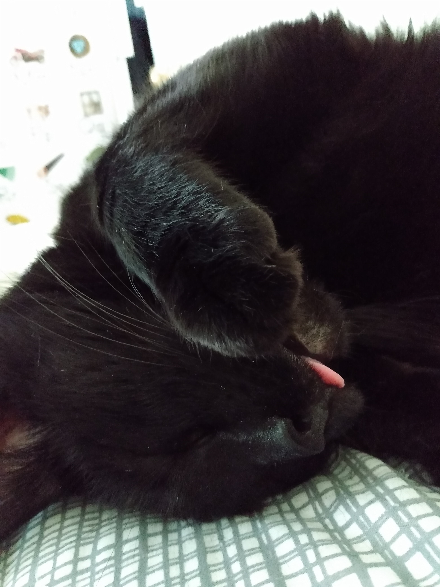
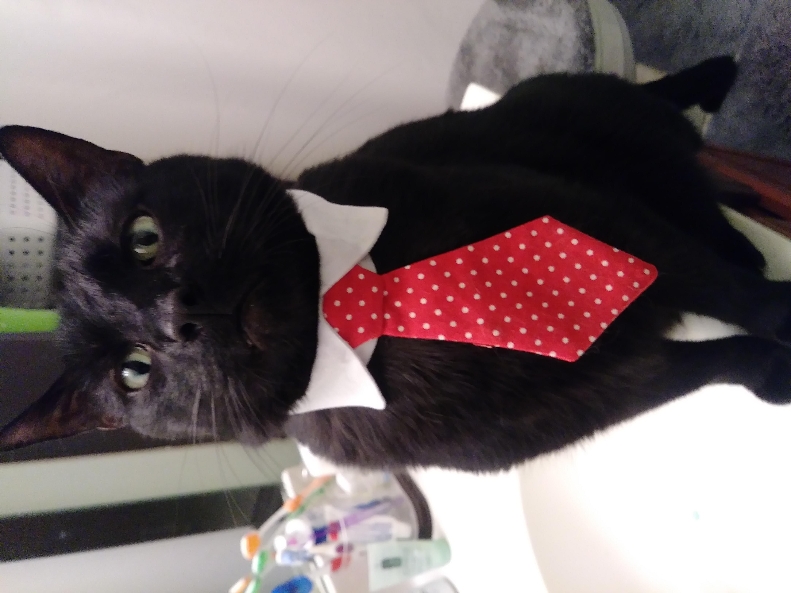
Alex
Alex is fondly referred to as "trash cat."
He was found as a kitten, hiding under a customer's porch while my husband was delivering pizza.
My husband asked if the cat belonged to the customers, was surprised when they replied, "No," and offered him to their delivery driver as a tip.
He is now 10 years old, living his best cat life, which still sometimes includes eating from the trash.
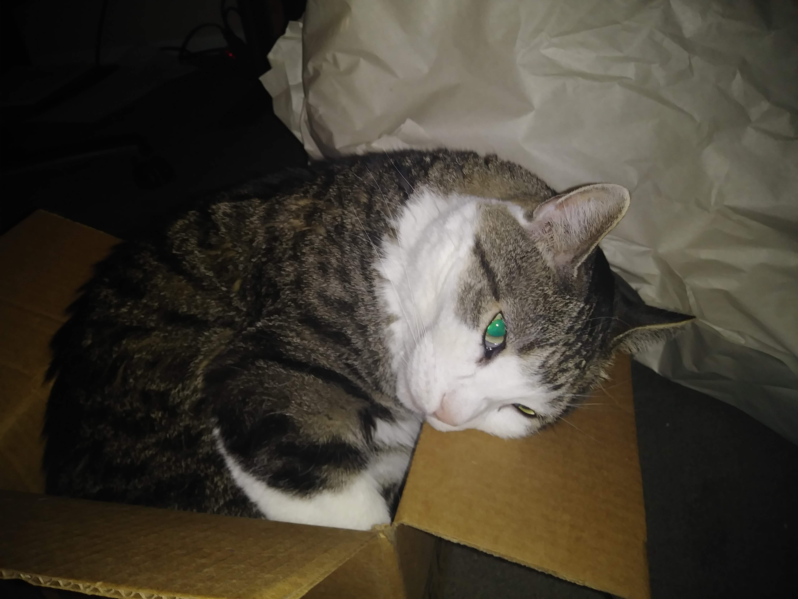
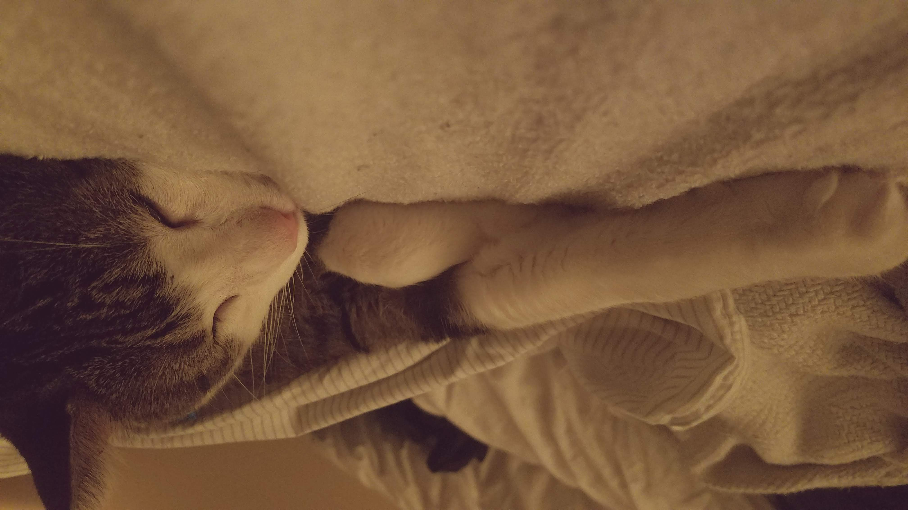
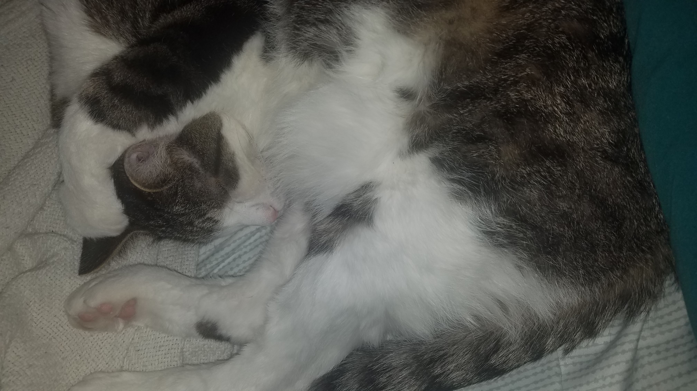
Midgey
Midgey is the queen of her household.
She is a demanding diva and she makes no apologies for it. Named for her size,
she has not let this be a limitation. She's successfully bullied dogs more than twice as large as she.
She is also highly regarded for her dulcet screams she uses to demand affection or food.
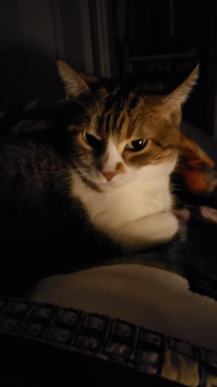
Handsome
Handsome, aka Hans, is a beautiful long haired rescue boi. He has a few ailments,
but he doesn't let that deter him from being the snuggliest and yelliest in Arizona.
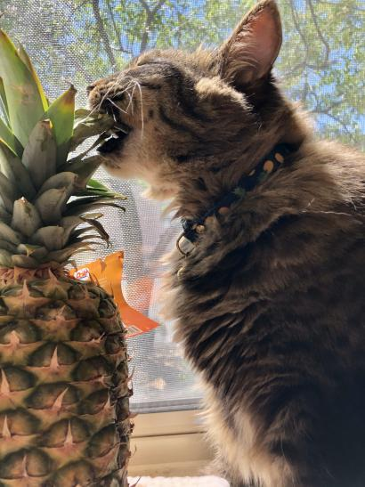
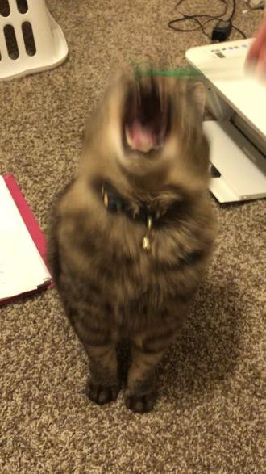
Agnes
Agnes is an American Short-Hair tuxie who immensely enjoys all things outside. Shy and tentative while inside the house,
she becomes gregarious and insatiable for attention. Something about the sunshine and birds chirping just make her come alive.
Slim
Slim, full name: Slim Lickins', was named for his long, lean body.
We like to call him the puppy cat due to his love of following his person,
and belly rubs.
Ferrous
Ferrous' name comes as no surprise when you see his beautiful rust-colored coat. What is surprising is his perpetual look of concern.
Probably a concern about the lack of food currently being eaten.
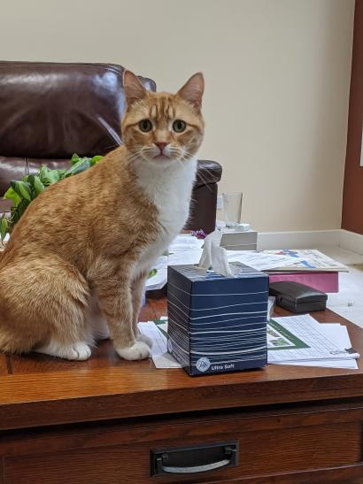
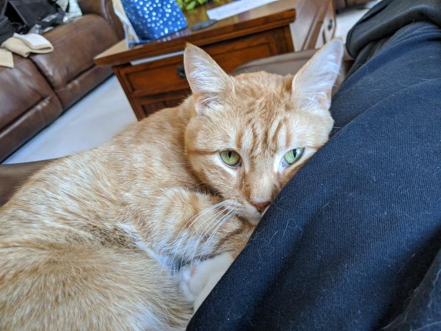
Echo
Echo is Ferrous' brother, believe it or not. His long, silky fur makes him irresistible to pet and that is exactly how he likes it.
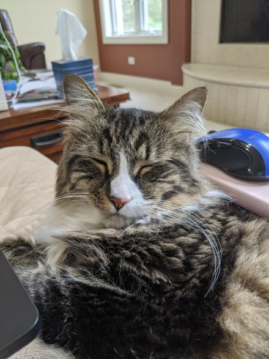
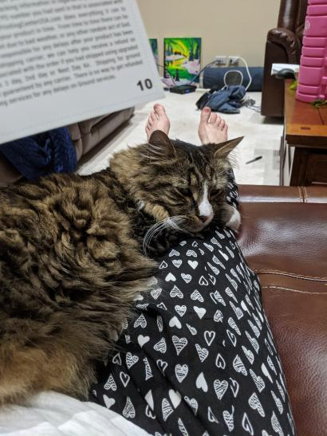
Gracie
Gracie is currently the only non-American in our catabase,
and if you could hear her, you'd be able to hear her meow with a British accent.
Her mom describes her as, "a cat made of circles." She is round in every way
and it only enhances how cute she is.
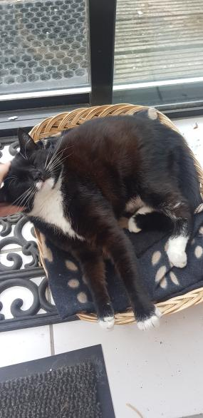
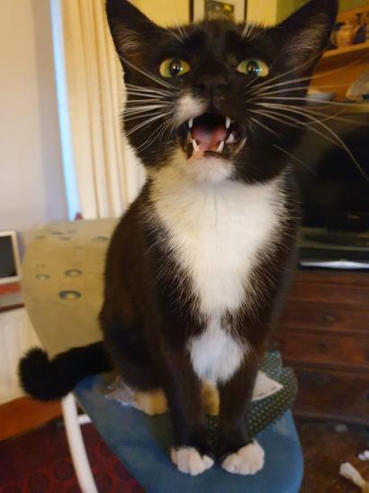
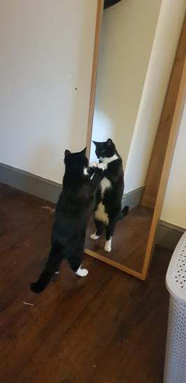
 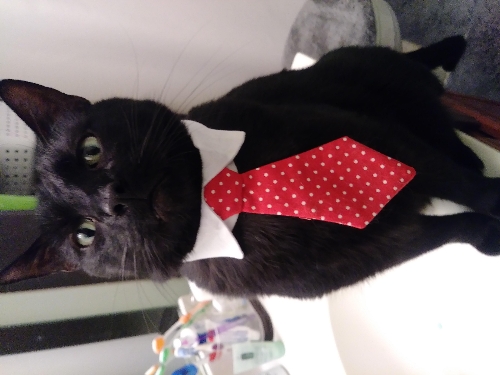
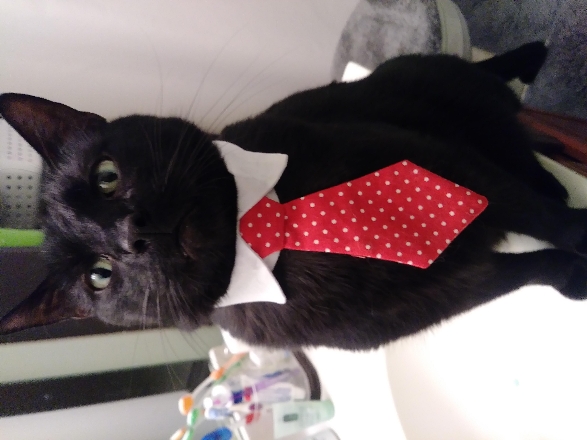


 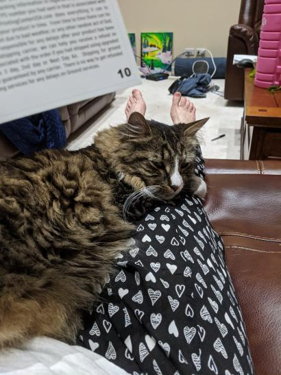
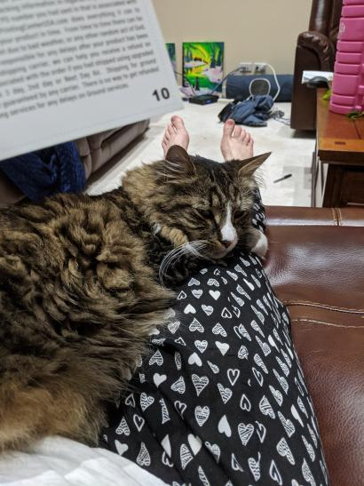